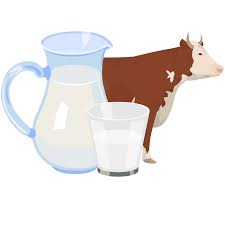
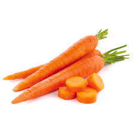

" CROPPRICEFORECAST: PREDICTING TOMORROW'S MARKET "
Concern about food security and its effect on persistent undernutrition has increased interest in how agriculture could be used to improve nutritional outcomes in developing countries.
"MARKET DYNAMICS AND CROP PRICING": Explore how market forces, including supply and demand, affect crop prices. This theme could cover factors like global market trends, consumer behavior,
and trade policies.
| CURRENT CROP PRICE 2024 |
|---|
| CROP | PRICE(per lit/kg) | RANK |
| Milk  | ₹50 | 1 |
| Mango | ₹42 | 2 |
| Apple | ₹32 | 3 |
| Ginger | ₹20 | 4 |
| Tomato | ₹18 | 5 |
| Onion | ₹16 | 6 |
| Carrot  | ₹12 | 7 |
- National Schemes for Agriculture 2023
- PM KISAN
- RASHTRIYA KRISHI VIKAS YOJANA
- MICRO IRRIGATION FUN(Mif)
- AGRICULTURE ACCELERATOR
- NATIONAL FOOD SECURITY MECHANISM
|
learn more |